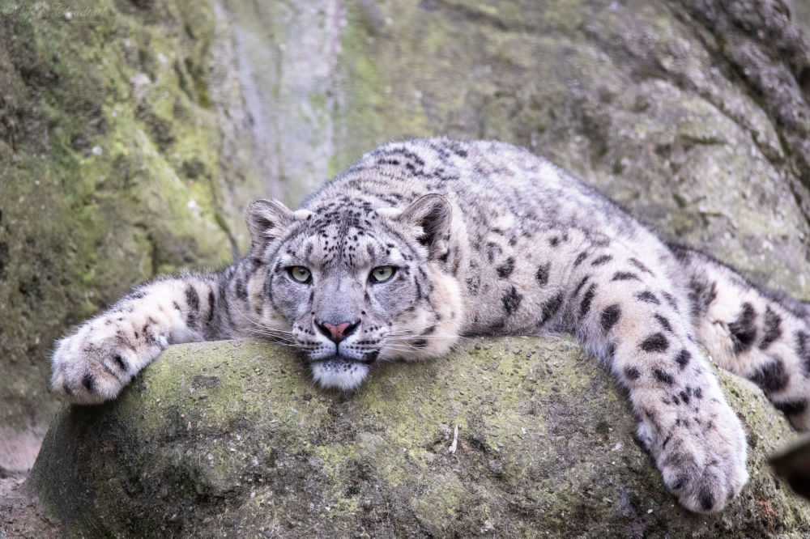

Снежный барс
Снежный барс (ирбис, ак барс) - крупное хищное млекопитающее из семейства кошачьих. Обитает в горных массивах Афганистана, Бирмы, Бутана, Индии, Казахстана, Кыргызстана, Китая, Монголии, Непала, Пакистана, России, Таджикистана и Узбекистана. Ирбис отличается тонким, длинным, гибким телом, относительно короткими лапами, небольшой головой и очень длинным хвостом. Достигая вместе с хвостом длины 200-230 см, весит до 55 кг. Окраска меха светлая дымчато-серая с кольцеобразными и сплошными тёмными пятнами.
Охотится снежный барс в основном на горных козлов и баранов, также в его рационе встречаются кабаны, фазаны и даже суслики. В силу труднодоступности местообитания вида, ирбисы до сих пор остаются малоизученными. Однако по приблизительным оценкам их количество варьируется примерно около 10 тысяч особей. По состоянию на 2013 год охота на ирбисов запрещена.